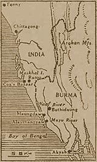

|
j
a v a s c r i p t |
February 8, 1944

India-Burma Border
Tribune: "Attack against British on Burma border started.... Free India Army fights side by side with Nippon forces." It's made to sound like a big thing, but we're unimpressed. "Arrangements made to bring Rice stock from provinces — problem solved for time being." It's just as well that the Japanese are lending us trains and trucks — Manila is practically out of rice. After leading up to it for some days, E.M. takes a definite crack at our Catholic Church leaders for being "tardy" in supporting "national aspirations," like independence. "Any factors within our church prejudicial to our patriotism should be eliminated." It sounds like a veiled threat to Santos and the Archbishop. News: The first seven days of the Marshall operations accounted for 8,100 Japanese dead and 264 taken prisoner — they hadn't eaten for four days. American casualties: 286 killed, 82 missing and about 1,000 wounded. One Mary Boyd Stagg collected money that ended up with the guerrillas. The Japanese got hold of a list of donors, and as a result, forty American Protestant missionaries are now in Bilibid. As for the Pirovano case, Manilans have stopped guessing and decided the boys must have been indiscreet, though it doesn't square with the method of arrest. |
|
|
|
|